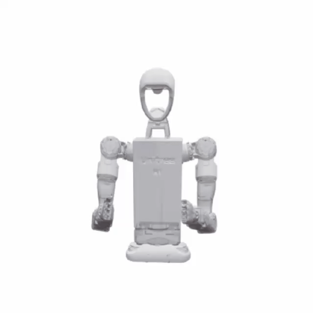
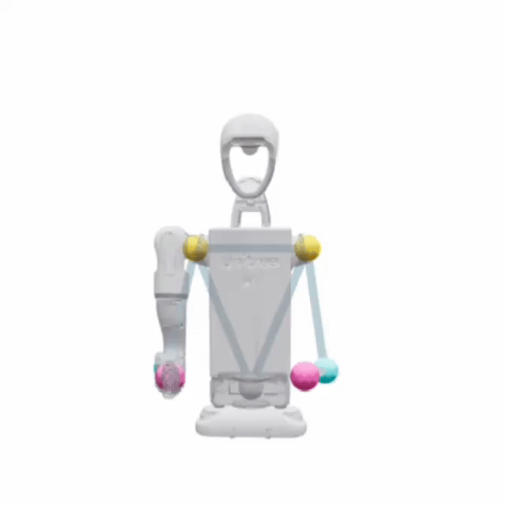
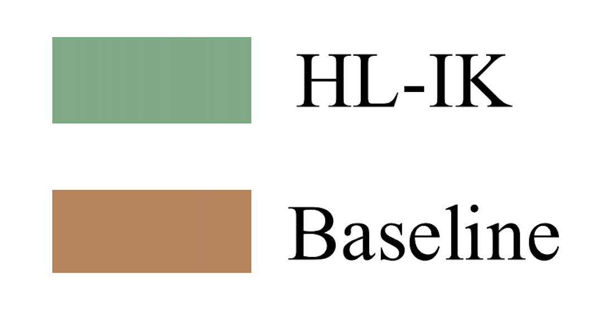

HL-IK: A Lightweight Implementation of Human-Like Inverse Kinematics in Humanoid Arms
Abstract
Traditional IK methods for redundant humanoid manipulators emphasize end-effector (EE) tracking, frequently producing configurations that are valid mechanically but not human-like. We pressent Human-Like Inverse Kinematics (HL- IK), a lightweight IK framework that preserves EE tracking while shaping whole-arm configurations to appear human- like—without full-body sensing at runtime. The key idea is a learned elbow prior: using large-scale human motion data retar- geted to the robot, we train a FiLM-modulated spatio-temporal attention network (FiSTA) to predict the next-step elbow pose from the EE target and a short history of EE–elbow states. This prediction is incorporated as a small residual alongside EE and smoothness terms in a standard Levenberg–Marquardt optimizer, making HL-IK a drop-in addition to numerical IK stacks. Over 183k simulation steps, HL-IK reduces arm- similarity position and direction error by 30.6% and 35.4% on average, and by 42.2% and 47.4% on the most challenging trajectories. Hardware teleoperation on a robot distinct from simulation further confirms the gains in anthropomorphism. HL-IK is simple to integrate, adaptable across platforms via our pipeline, and adds minimal computation, enabling human- like motions for humanoid robots.
EE–elbow data collection
Robot Retargeting Tsajectories
EE-Elbow Dataset
Network operation process

Simulation Visualization

Expert_Trial_upper_left_225_poses

Novice_Trial_upper_left_035_poses

S09_Novice_Trial_upper_left_082_poses

Trial_upper_left_right_043_poses

S09_Novice_Trial_upper_right_046_poses

S09_Novice_Trial_upper_right_left_044_poses
Teleoperation Results



BibTeX
@article{hl-ik,
title = {HL-IK: A Lightweight Implementation of Human-Like Inverse Kinematics in Humanoid Arms},
author = {Bingjie Chen, Zihan Wang, Han Zhe, Guoping Pan, Cheng Yi, Houde Liu},
journal = {arXiv preprint arXiv: Arxiv-2509.20263},
year = {2025},
}